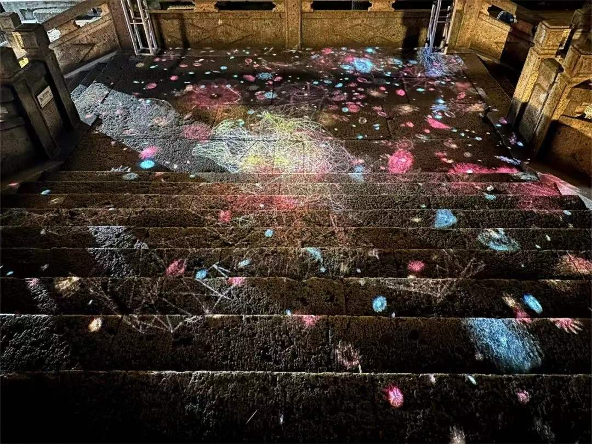
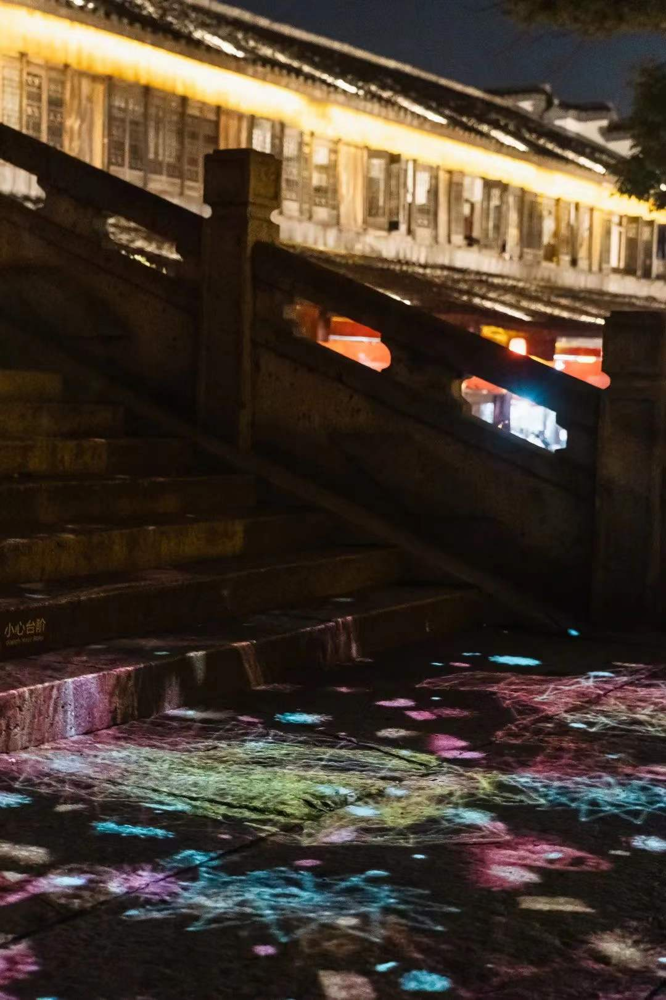
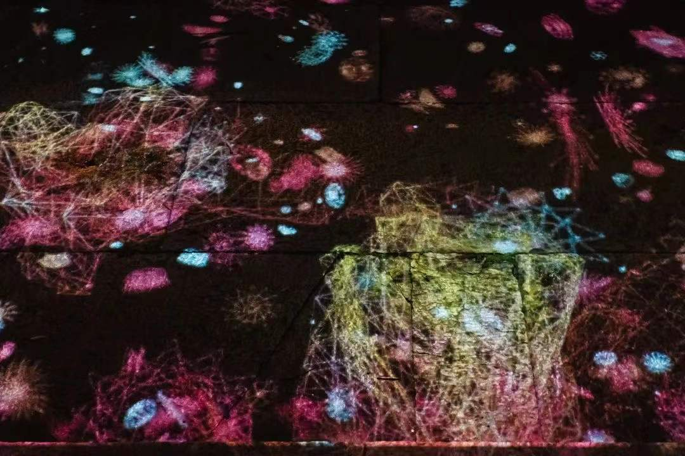
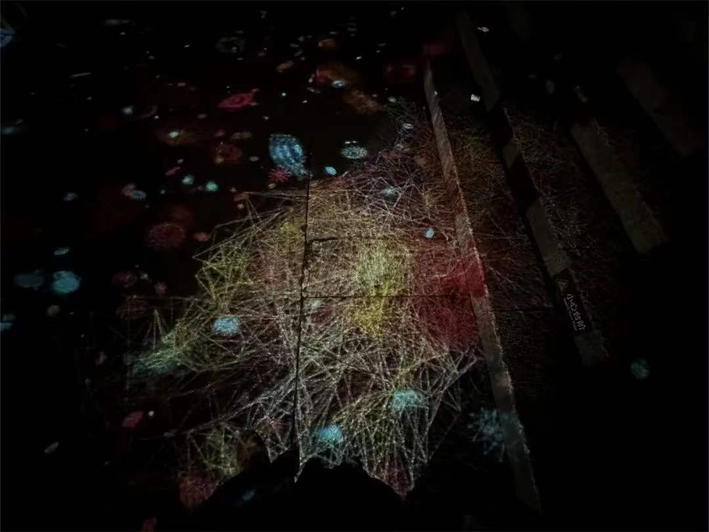

Artwork / 作品观念
如果仅仅看到投影仪以 0～255 的数值控制像素所组成的图像，作品还没有真正完整。数字影像需要与它所在的现实世界相遇。
当生成的花朵与流动的光点落在安昌的桥面、台阶与行走路径上，它们也映照着这座桥上曾经经过、正在经过，以及未来可能经过的生命。甚至那些只能通过照片、网络或想象抵达这里的人，也在这段空间经验之中。
当桥面上的数字投影与现实世界的意义重叠，它就可以映射出百年间从这个桥上走过的生命。
它像是一条会流动的水，映射着我们在现实生活中看不到的人事物。
ARTWORK / 2023 / GENERATIVE PROJECTION
One Glance, Ten Thousand
数字花朵在青石桥面上绽放，也在一座古桥的时间中流动。

如果仅仅看到投影仪以 0～255 的数值控制像素所组成的图像，作品还没有真正完整。数字影像需要与它所在的现实世界相遇。
当生成的花朵与流动的光点落在安昌的桥面、台阶与行走路径上，它们也映照着这座桥上曾经经过、正在经过，以及未来可能经过的生命。甚至那些只能通过照片、网络或想象抵达这里的人，也在这段空间经验之中。
当桥面上的数字投影与现实世界的意义重叠，它就可以映射出百年间从这个桥上走过的生命。
它像是一条会流动的水，映射着我们在现实生活中看不到的人事物。



自然界的生命生生不息，它总是在不断地生长和发展，繁花似锦，一眼万千。《一眼万千》以各色花朵为形象依托，通过视觉手段投放在青石板桥上，展现生命的力量和美丽，并让人们感受到在水、桥、花之间生命的不断流动、绽放与变幻。